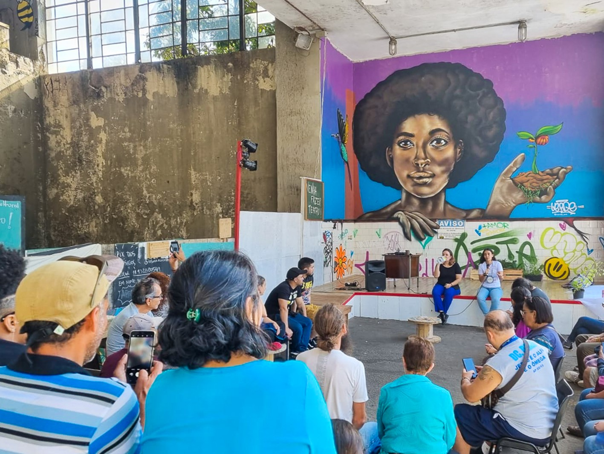

O Incinerador Vergueiro foi um dos três incineradores paulistanos, localizado no Ipiranga, Zona Sul de São Paulo. Inicialmente, foi destinado à queima de lixo doméstico, porém em 1977 começou a receber também, lixo hospitalar, sendo muito importante para a cidade de São Paulo, queimando cerca de 50 toneladas de lixo. Porém, entre o final dos anos 90 e o início dos anos 2000, a população na qual estava extremamente descontente com as fumaças geradas pelo incinerador, que atingiam um raio de 10km, começou a protestar intensivamente contra as atividades daquele local.
Foi divulgado um relatório em 12 de janeiro de 2000, que encontrou coliformes fecais, bacteriófagos e Pseudomonas nas cinzas, comprovando que os incineradores são inúteis no processo de esterilização dos resíduos (a razão é que os fornos não conseguiam atingir temperaturas suficientes para queimar os resíduos de órgãos, sangue, medicamentos vencidos e produtos químicos tóxicos de hospitais.) O relatório também destacou que substâncias tóxicas e cancerígenas como dioxinas e furanos eram liberadas na fumaça. A prefeitura recebeu um prazo de 48 horas para assinar um Termo de Ajustamento de Conduta Ambiental, no qual a mesma prometeu resolver os problemas em três meses. A partir disso, os resíduos tiveram de ser separados antes de entrarem no incinerador, o que reduziu significativamente o volume médio de resíduos de 50 toneladas para 6 toneladas por dia, e continuou a diminuir até à última incineração em Dezembro de 2001 e seu fechamento definitivo em 2002.
No dia 5 de julho de 2006 era assinado um acordo de colaboração entre a Subprefeitura Ipiranga e o Instituto São Marcos de Cidadania Global, da Universidade São Marcos para transformar em polo cultural e de estudos ambientais a antiga usina de incineração de lixo do Ipiranga. A ideia era resgatar o local para visitas da população e preservar as instalações dado a importância do espaço para a história do Ipiranga. Além do espaço onde é o incinerador, seria ocupado também salas de um prédio ao lado que fora ocupado pela secretaria Municipal de Serviços e Obras. Porém, a universidade acabou indo a falência e o projeto foi pausado. Hoje, nosso objetivo é finalizar o que foi iniciado, transformando o incinerador em um espaço eco cultura, com diversas atividades disponíveis para os visitantes.